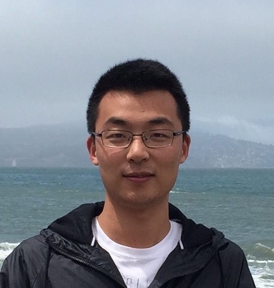

Yang Sun (孙阳)
Education
2007 ~ 2011, B.Sc. Physics, University of Science and Technology of China
2011 ~ 2016, Ph.D. Physics, University of Science and Technology of China
Employment
2016 ~ 2019, Postdoc Associate, Ames Laboratory
2019 ~ 2020, Postdoc Scientist, Columbia University
2021 ~ 2022, Research Scientist, Iowa State University
2020 ~ 2022, Associate Research Scientist, Columbia University
2023 ~ 2024, Associate Professor, Physics, Xiamen University
2024 ~ now, Professor of Physics, Xiamen University
Professional Activities
Associate Editor for JGR: Machine Learning and Computation
Reviewed articles for Physical Review Letters/Applied/B/E/Materials; Advanced Materials/Functional Materials/Science; ACS journals; Nature journals; etc.
Organized and chaired the Planetary Materials session at the 33rd IUPAP Conference on Computational Physics, 2022